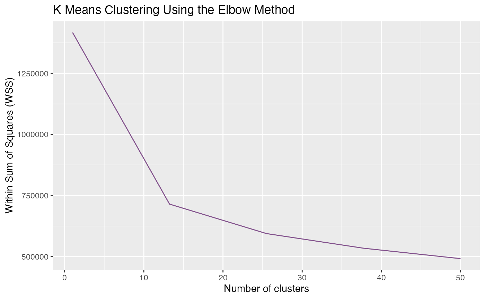
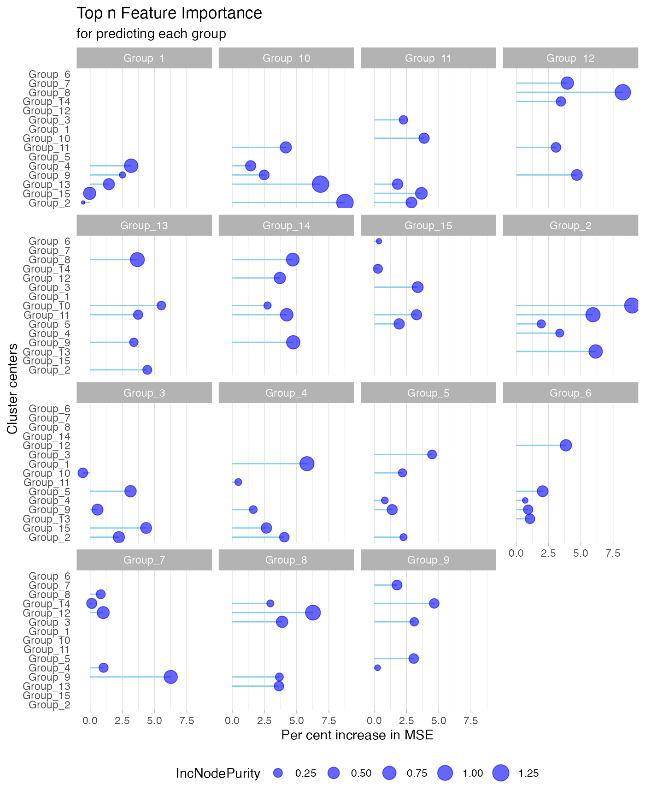

Fungal Garden
fungal.RmdLoad Data
Fungal gardens serve as an external digestive system for the fungus-growing ant, with mutualistic fungi in the genus Leucoagaricus converting the plant substrate into energy. This dataset is collected from soil sample of the fungal garden that gradually infected over time by a pathogenic fungus, Escovopsis. The goal is to study the dynamic system and analyzed the bacterial taxa present in this system to capture the community shifts and map the detected activity in space.
data("fungal_garden")
# 'fungal_garden' is a list of 3:
head(fungal_dlist[[1]],3)
#> ID D0_01 D1_02 D2_03 D3_04 D4_05 D5_06
#> 1 grp1_1 -0.9533405 -1.106882 -0.7821818 -2.344134 -2.213369 -1.846307
#> 2 grp1_2 -0.9533405 -1.106882 -0.7821818 -1.740328 -1.983804 -1.910560
#> 3 grp1_6 0.9672390 1.351778 1.2871986 1.306616 1.253802 1.228330
#> D6_07 D7_08 D8_09 D9_10 D10_11
#> 1 -2.019264 -1.653271 -1.855675 -1.856335 -2.675131
#> 2 -2.360466 -1.728546 -2.204190 -2.552709 -3.220536
#> 3 1.522306 1.381057 1.512031 1.391325 1.297332
head(fungal_dlist[[2]],3)
#> ID D0_01 D1_02 D2_03 D3_04 D4_05
#> 1 grp2_1 0.07955562 -0.06847126 -0.085804628 -0.06970496 -0.189086831
#> 2 grp2_2 0.14481731 0.63121925 0.640259446 0.53728726 0.003337022
#> 3 grp2_3 -0.71104811 -0.03273029 0.007307968 0.15272255 0.151116165
#> D5_06 D6_07 D7_08 D8_09 D9_10 D10_11
#> 1 -0.01056197 -0.30973183 -0.1719941 -0.1238594 -0.2293862 0.1021993
#> 2 -0.20361189 0.62014296 0.9765937 1.0188160 0.8699408 0.3023357
#> 3 0.04532175 0.09048819 0.3211153 0.3079252 0.2960252 -0.4230718
head(fungal_dlist[[3]],3)
#> ID D0_01 D1_02 D2_03 D3_04 D4_05 D5_06
#> 1 grp3_1 -0.4702515 -0.3390523 -0.501346 -0.4833872 -0.4902185 -0.6680519
#> 2 grp3_2 -1.6644934 -2.6212720 -2.283416 -1.8775744 -0.6482506 -1.5863859
#> 3 grp3_3 -0.9248744 -0.6240496 -0.552006 -0.2821400 -0.3161406 -0.3980750
#> D6_07 D7_08 D8_09 D9_10 D10_11
#> 1 -0.6609125 -0.7754728 -0.7022775 -0.5814545 -0.1418371
#> 2 -1.7470608 -0.3588664 -1.0980109 -1.7763473 -0.4198883
#> 3 -0.3106139 -0.2878704 -0.2226940 -0.1963857 0.4274527
# 'pathway' has all the annotation information
head(pathway,3)
#> ID taxonomic.scope ko_term Pathway
#> 1 grp1_24 Bacteria K02706 00195_Photosynthesis
#> 2 grp1_25 Bacteria K02706 00195_Photosynthesis
#> 3 grp1_26 Bacteria K02706 00195_PhotosynthesisPreprocess
data input
We first reshape the datalist into our standard format. The type column is to describe datasets from the input, and if not specified, the type will be auto-filled with “dataset 1”, “dataset 2”, etc.
a <- pre_process(fungal_dlist,typenameList = c("Peptide","Metabolite","Lipid"))
#> [1] "Reformat a list of datasets:"
# The following dataset is our standard input:
head(a,3)
#> ID D0_01 D1_02 D2_03 D3_04 D4_05 D5_06
#> 1 grp1_1 1.350981 1.0922535 1.6393933 -0.99258979 -0.7722424 -0.15372092
#> 2 grp1_2 1.255873 1.0449588 1.4909861 0.17482077 -0.1596318 -0.05901949
#> 3 grp1_6 -2.330833 0.2237842 -0.2052373 -0.07624194 -0.4271007 -0.59632291
#> D6_07 D7_08 D8_09 D9_10 D10_11 type
#> 1 -0.4451639 0.1715562 -0.1695078 -0.1706187 -1.5503401 Dataset_1
#> 2 -0.6770360 0.1910056 -0.4623665 -0.9411120 -1.8584783 Dataset_1
#> 3 1.3566591 0.4182970 1.2884006 0.4865118 -0.1379168 Dataset_1cluster input
Then we generate clusters from the long dataset above. The number of
clusters can be adjusted according to the elbow method plot in
b[[2]], where we picked one close to the inflection
point.
b <- gClusters(a,ncluster = 15)
#b[[1]] has all the cluster level information, includes: cluster, center, totss, withinss, betweens, size, iter, and ifault.
#b[[2]] is the WSS plot for different number of clusters.
b[[2]]
network input
After that, we got the network result from the clusters. We pick top 5 predictors for each feature, and save the network output for future use.
networkres <- gNetwork(b,ntop = 5)Users could also view more details of the results with the following function:
gNetwork_view(networkres)
Run Dashboard
Name the title and declare the annotation, and then run the dashboard.
gDashboard(a,b,pathway,networkres,
dashboardtitle = "MolPad Dashboard",
id_colname = c("GO_ID","KEGG_ID"),
id_type = c("GO","KEGG"))